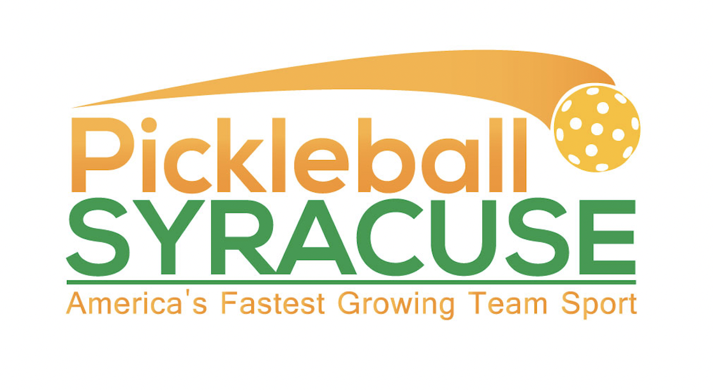
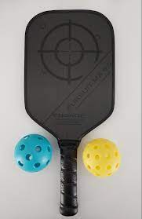

Skip to main content
Overview
How to Play
Where to Play
Where to Play

Locations in Syracuse:
Magnarelli Community Center
Hanlon Pool and Ellis Field Park
Elevate Fitness Liverpool
East Area YMCA
CNYpickleball
How to create your own pickleball court on a tennis court:
First lower the tennis net to 34" in the center.
Lines may be taped or painted on the court for pickleball (always check with facility first). Then the court can be used for both tennis and pickleball very easily. Because of the size of the court surface, you might want to have some sort of temporary barrier for the balls so that they don't have to be chased the full length of the court.
The center strap could be used to bring the net down to 34 inches in the center. If the tension on the net cord is very tight, the tension might have to be loosened slightly by adjusting the ratchet on the net post.
Specs of a court:
Pickleball Court Dimensions: 20 by 44 feet, for both singles and doubles play
Pickleball Net Height: 36 inches at the sidelines, 34 inches in the middle
Pickleball Playing Area: 30 by 60 feet is the standard when converting a tennis court, but 34 by 64 feet is preferable for tournament play or if you will have a standalone pickleball court
Buying a racket

Dicks Sporting Goods
Amazon
Name:
Email Address
Would you like more information emailed to you?